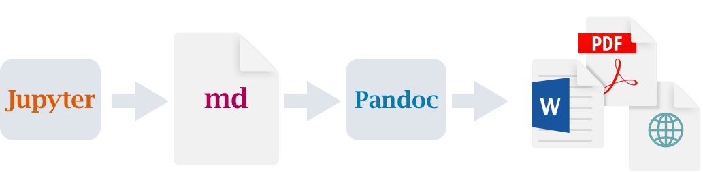
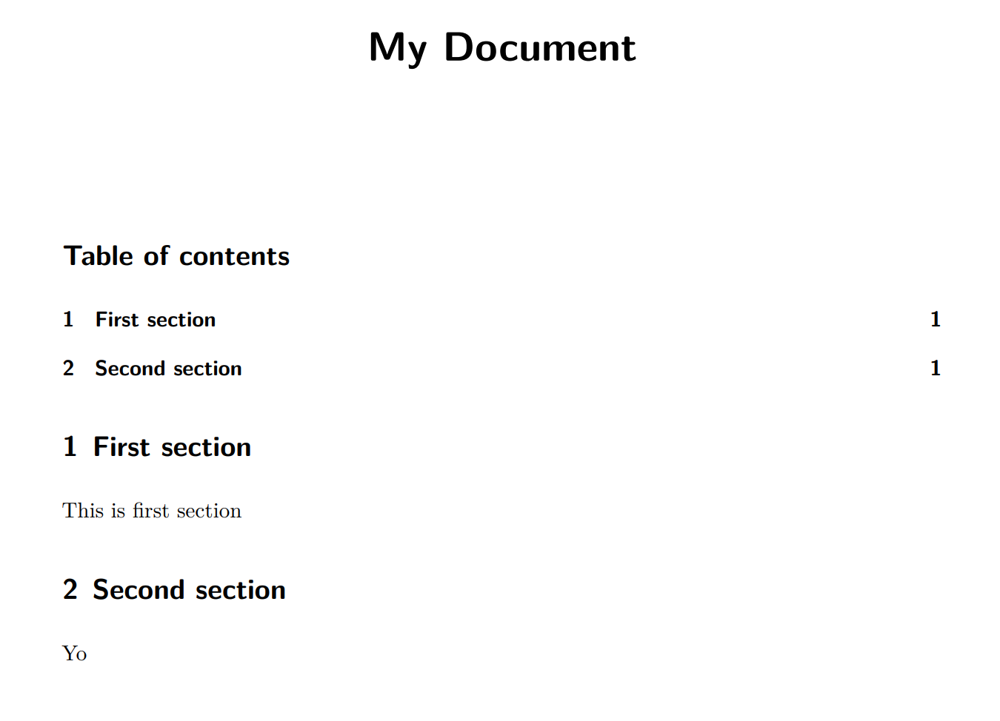
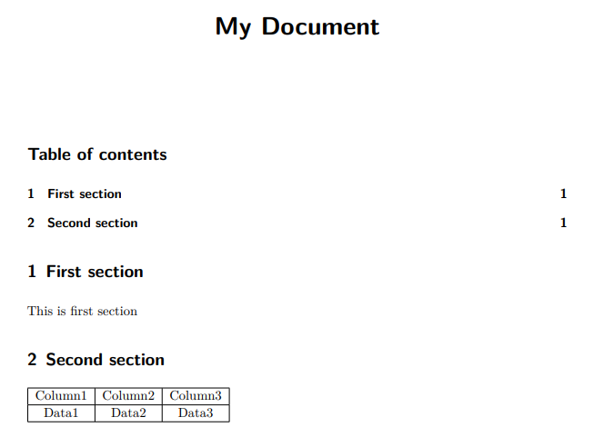
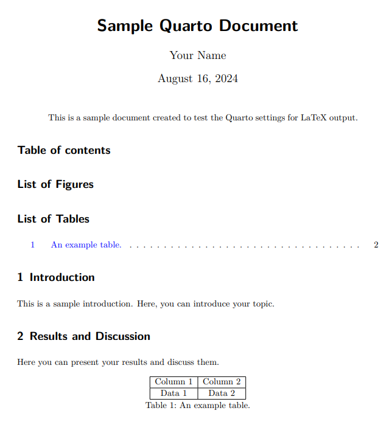

!quarto install tinytexQuarto 是一个文档系统，可以将用来生成 html、pdf 等多种文档，以及生成一个静态网站（本博客就是用 Quarto 生成的），或者生成一本在线电子书。详细的介绍可以参见此链接。下图是一个 Quarto 的文档生成流程： 
简单 MD 文档生成 PDF
创建一个简单的 qmd 文件，并将其转为 pdf 文档
qmd = r'''
---
title: "My Document"
format:
pdf:
toc: true
number-sections: true
colorlinks: true
---
# First section
This is first section
# Second section
Yo
'''
with open('simple_pdf.qmd', 'w') as f:
f.write(qmd)使用以下 quarto 命令将这个 simple_pdf.qmd 文件生成为 pdf 文件
!quarto render simple_pdf.qmdpandoc
to: latex
output-file: simple_pdf.tex
standalone: true
pdf-engine: xelatex
variables:
graphics: true
tables: true
default-image-extension: pdf
toc: true
number-sections: true
metadata
documentclass: scrartcl
classoption:
- DIV=11
- numbers=noendperiod
papersize: letter
header-includes:
- '\KOMAoption{captions}{tableheading}'
block-headings: true
title-block-banner: true
title: My Document
colorlinks: true
Rendering PDF
running xelatex - 1
This is XeTeX, Version 3.141592653-2.6-0.999996 (TeX Live 2024) (preloaded format=xelatex)
restricted \write18 enabled.
entering extended mode
running xelatex - 2
This is XeTeX, Version 3.141592653-2.6-0.999996 (TeX Live 2024) (preloaded format=xelatex)
restricted \write18 enabled.
entering extended mode
Output created: ../../_site/posts/2024-08-14-quarto-and-latex/simple_pdf.pdf

可以看到，生成 pdf 文件是使用的 latex 引擎。
在 MD 文档中插入 latex 代码
在文档中插入 latex 代码
qmd = r'''
---
title: "My Document"
format:
pdf:
toc: true
number-sections: true
colorlinks: true
---
# First section
This is first section
# Second section
\begin{tabular}{|c|c|c|}
\hline
Column1 & Column2 & Column3 \\
\hline
Data1 & Data2 & Data3 \\
\hline
\end{tabular}
'''
with open('simple_pdf_with_latex_code.qmd', 'w') as f:
f.write(qmd)运行
!quarto render simple_pdf_with_latex_code.qmd
纯 latex 文档
qmd = r'''
---
format:
pdf:
toc: true
number-sections: true
colorlinks: true
---
\title{Sample Quarto Document}
\author{Your Name}
\date{\today}
\maketitle
\begin{abstract}
This is a sample document created to test the Quarto settings for LaTeX output.
\end{abstract}
\tableofcontents
\listoffigures
\listoftables
\section{Introduction}
This is a sample introduction. Here, you can introduce your topic.
\section{Results and Discussion}
Here you can present your results and discuss them.
\begin{table}[h]
\centering
\begin{tabular}{|c|c|}
\hline
Column 1 & Column 2 \\ \hline
Data 1 & Data 2 \\ \hline
\end{tabular}
\caption{An example table.}
\end{table}
\section{Conclusion}
This is the conclusion.
'''
with open('simple_pdf_all_latex_code.qmd', 'w') as f:
f.write(qmd)!quarto render simple_pdf_all_latex_code.qmd